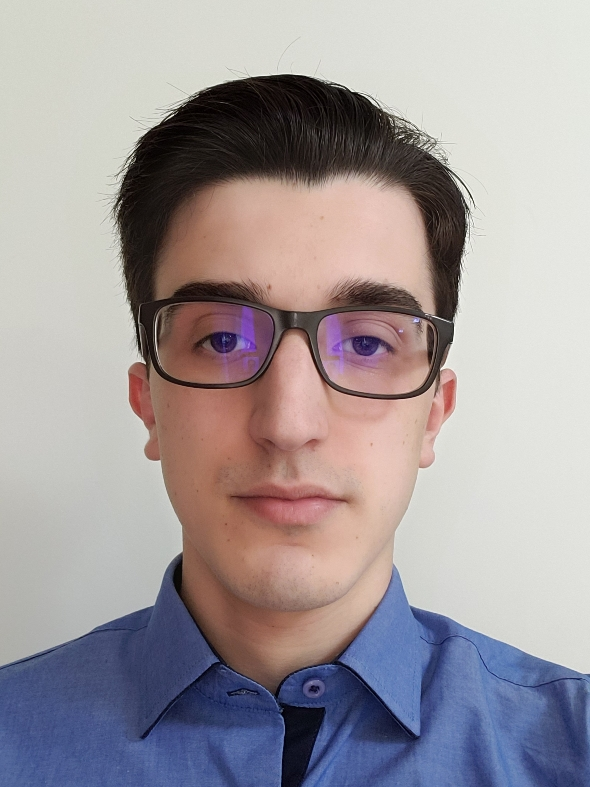

Mateus Ferro Antunes de Oliveira

Contato
- +55 (41) 997504454
- mateus.ferro.2001@hotmail.com
-
Linkedin
-
GitHub
Formação Acadêmica
- Graduação em Engenharia de Computação
- Pontifícia Universidade Católica do Paraná (PUCPR) - 2019 à 2023
- Índice de Rendimento Acadêmico
(IRA): 9.2 / 10.0 | (GPA): 3.7 / 4.0
Experiência Profissional
- Scrum Master da Siemens - (Jan/2023 - Fev/2024)
- Liderança na implementação de metodologias ágeis;
- Coordenação e estruturação de atividades de planejamento;
- Colaboração com partes interessadas internas e externas;
- Gestão e planejamento inicial para a equipe;
- Principais resultados: Adoção de práticas ágeis, melhora na qualidade de entregas
com satisfação constante do cliente e melhora na produtividade da equipe.
- Analista de Desenvolvimento de Sistemas da Siemens - (Jul/2022 - Fev/2024)
- Criação de um sistema de comunicação a partir de um sistema legado;
- Atuação em diferentes projetos e concessionárias do ramo energético do Brasil;
- Desenvolvimento de novos sistemas de comunicação;
- Principais resultados: Entrega de soluções inovadoras e eficientes para diferentes
clientes, melhora de performance e de usabilidade na migração do sistema legado.
- Estagiário em Engenharia de Computação da Siemens - (Jan/2022 - Jul/2022)
- Contato e reuniões com clientes;
- Implementação de soluções voltadas ao ramo energético;
- Desenvolvimento de sistemas de comunicação;
- Principais resultados: Entrega de sistemas de comunicação cliente e empresa.
- Cofundador, Sócio e Desenvolvedor da Opfinds - (Out/2019 - Jun/2022)
- Desenvolvimento de aplicações em Flutter;
- Cofundador da Startup dentro da PUCPR e do espaço de empreendedorismo e
inovação da escola politécnica (SPInE);
- Principais resultados: Aprendizado pessoal em questões técnicas para soluções
diversas e em questões mercadológicas no estudo do cliente e do mercado.
Idiomas
- Português - Nativo
- Inglês - Intermediário / pré-avançado
Conhecimento em Software
- Python
- Java
- Dart / Flutter
- C
- C++
- HTML / CSS / JavaScript
- Assembly
- MatLab
- Inteligência Artificial
- Banco de Dados Relacional/NoSQL
- Git / GitHub / GitLab / Tortoise
- Desenvolvimento Ágil / Scrum
- Pacote Office
Experiência Acadêmica
Pesquisador no Programa de Pós-graduação de Tecnologia em Saúde - PUCPR - (2019 - 2023)
- Participação voluntária na pesquisa e na escrita de artigos (2022 - 2023);
- PIBIC* - Registro 3D entre Modelos Térmicos Tridimensionais (2021 - 2022);
- PIBIC* - Geração de modelos térmicos tridimensionais (2020 - 2021);
- PIBIC* - Processamento e Visualização 3D de Imagens da Tireoide (2019 - 2020).
*Programa Institucional de Bolsas de Iniciação Científica
Coautoria no artigo “3D Thermal Models: A Case Study of the Neck” publicado no International
Journal of Development Research em 2020 - (Classificação da revista A2).
Coautoria no artigo “3D Multi-Modality Medical Imaging: Combining Anatomical and Infrared
Thermal Images for 3D Reconstruction” publicado na Sensors MDPI em 2023 - (Classificação
da revista A2).
Qualificações e Conquistas
- Prêmio Marcelino Champagnat - Mérito Acadêmico pelo melhor desempenho acadêmico da
turma de 2023 de
Engenharia de Computação PUCPR - (Jan/2024)
- Prêmio Dean's List - 10° Edição Portfólio de Talentos da Escola Politécnica PUCPR -
(Out/2023)
- Prêmio Dean's List - 9° Edição Portfólio de Talentos da Escola Politécnica PUCPR -
(Out/2022)
- 1° Lugar - Hackathon Poliweek PUCPR - (Out/2021)
- 6° Lugar global - Artificial Intelligence Hackathon, promovido pelo Facebook - (Jun/2020)
- Certificado de Potencial de Inovação - Hackathon de Sustentabilidade PUCPR - (Out/2019)
Formação Complementar